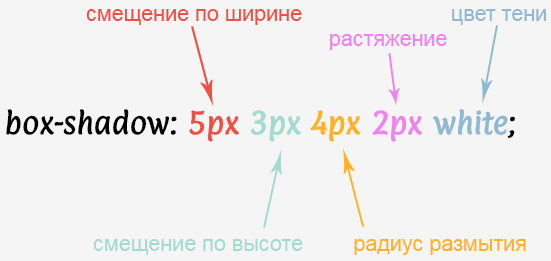

Поддержка браузерами |
 |
Добавляет тень к элементу. Допускается использовать несколько теней, указывая их параметры через запятую, при наложении теней первая тень в списке будет выше, последняя ниже.
Если для элемента задается радиус скругления через свойство border-radius, то тень также получится с закруглёнными уголками.
Добавление тени увеличивает ширину элемента, поэтому возможно появление горизонтальной полосы прокрутки в браузере.
| none | отменяет добавление тени. |
| <тень>: | inset <сдвиг по x> <сдвиг по y> <размытие> <растяжение> <цвет> |
| inset | тень выводится внутри элемента. |
| <сдвиг по x> | Обязательный параметр. Смещение тени по горизонтали относительно элемента. Положительное значение этого параметра задает сдвиг тени вправо, отрицательное - влево. |
| <сдвиг по y> | Обязательный параметр. Смещение тени по вертикали относительно элемента. Положительное значение задаёт сдвиг тени вниз, отрицательное - вверх. |
| <размытие> | Задаёт радиус размытия тени. Чем больше это значение, тем сильнее тень сглаживается, становится шире и светлее. Если этот параметр не задан, по умолчанию устанавливается равным 0, тень при этом будет чёткой, а не размытой. |
| <растяжение> | Положительное значение растягивает тень, отрицательное, наоборот, её сжимает. Если этот параметр не задан, по умолчанию устанавливается 0, при этом тень будет того же размера, что и элемент. |
| <цвет> | цвет тени в любом доступном CSS формате. по умолчанию тень чёрная. |
Допускается указывать несколько теней, разделяя их параметры между собой запятой. Учитывается следующий порядок: первая тень в списке размещается на самом верху, последняя в списке - в самом низу.
Тени не влияют на компоновку и могут перекрывать другие элементы или их тени. С точки зрения контекстов укладки и порядка рисования внешние тени элемента рисуются непосредственно под фоном этого элемента, а внутренние тени элемента рисуются непосредственно над фоном этого элемента (ниже border и border-image, если таковые имеются).
Если элемент имеет несколько ящиков, все они получают тени, но тени рисуются только там, где также будут нарисованы границы; см. box-decoration-break.
Тени не вызывают прокрутку или не увеличивают размер прокручиваемой области.
box-shadow:10px 10px 10px rgba(5,5,5,1.0); |
box-shadow:20px -20px 0px #700070; |
box-shadow:0 0 0 5px rgba(5,5,5,.8); |
box-shadow:0px 0px 30px red, 0 0 50px yellow; |
box-shadow:inset 10px 10px 0px #700070; |
box-shadow:10px 0px 0px #700070, 0px 10px 0px #f00070, -10px 10px 0px green; |
box-shadow: inset 2px 2px 5px rgba(154, 147, 140, 0.5), 1px 1px 5px rgba(255, 255, 255, 1); background:#e6e3df; |
box-shadow: 0 14px 28px rgba(0,0,0,0.25), 0 10px 10px rgba(0,0,0,0.22); |
box-shadow: 0 10px 0 #3C93D5; :hover{background:#6FC6FF;} |
:hover{box-shadow:2px 2px white,4px 4px Teal,6px 6px white,8px 8px Teal;} |
:hover{box-shadow: 0 0 0 2px white, 0 0 0 4px Teal;} |
hover{box-shadow: 250px 0 0 0 rgba(0,0,0,.3) inset; |
.box-1 {
width:300px; height:150px; margin:10px auto;
background:url(img/box-shadow-syntax.png); background-size:100% 100%;
transform:scale(1);
box-shadow:0 0 5px 5px rgba(34, 60, 80, 0.2);
transition:box-shadow 0.5s, transform 0.5s, margin 0.5s;}
.box-1:hover {margin:26px auto; transform:scale(1.2);
box-shadow:0 0 15px 7px rgba(34, 60, 80, 0.2);
transition:box-shadow 0.5s, transform 0.5s, margin 0.5s;}<div class="box-1"></div>Мы можем добавить тень к псевдоэлементу :after и создать тень ниже элемента. Тем самым создавая иллюзию, что элемент был поднят вверх, а потом упал.
.box-2 {
width:200px; height:150px; margin:40px auto; background-color:#ddd;
transform: translateY(0); transition: transform 1s;}
.box-2::after {content:""; display:block;
position:absolute; bottom: -30px; left:50%;
height:8px; width:100%;
box-shadow:0px 0px 15px 0px rgba(0, 0, 0, 0.4);
border-radius:50%;
background-color:rgba(0, 0, 0, 0.2);
transform:translate(-50%, 0); transition:transform 1s;}
.box-2:hover {transform:translateY(-40px); transition:transform 1s;}
.box-2:hover::after {
transform: translate(-50%, 40px) scale(0.75);
transition: transform 1s;}<div class="box-2"></div>Тень возможно сделать не только на элементах в виде блока или круга, но и на более сложных формах с использованием свойства clip-path. Правда свойство box-shadow при этом не сработает и нам придется заменить его другим.
В CSS существует фильтр, который тоже делает CSS тень блока - drop-shadow(). Но у вас не поучится использовать его непосредственно на элементе, так как clip-path просто отрежет эту тень. Поэтому создаем родительский блок и наложим тень на него.
.box-3__wrapper {
filter: drop-shadow(-1px 6px 3px rgba(34, 60, 80, 0.2));
display:flex; justify-content:center; align-items:center;
width:300px; margin: 10px auto 20px;}
.box-3 {
clip-path: polygon(30px 0%, 100% 0%, 100% 100%, 30px 100%, 0 50%);
background-color:#eef;
font-size:40px; padding:40px 50px;}<div class="box-3__wrapper">
<span class="box-3">box-3</span>
</div>.rotate-shadows {width:220px; height:220px; position:relative;}
.rotate-shadows:after, .rotate-shadows:before {
content:""; border-radius:50%;
position:absolute; top:0; left:0;
width:100%; height:100%; transform-origin:center center;
}
.rotate-shadows:before {
box-shadow: inset 0 20px 0 rgba(0, 250, 250, 0.6),
inset 20px 0 0 rgba(0, 200, 200, 0.6),
inset 0 -20px 0 rgba(0, 150, 200, 0.6),
inset -20px 0 0 rgba(0, 200, 250, 0.6);
animation: rotate-before 2s -0.5s linear infinite;
}
.rotate-shadows:after {
box-shadow: inset 0 20px 0 rgba(250, 250, 0, 0.6),
inset 20px 0 0 rgba(250, 200, 0, 0.6),
inset 0 -20px 0 rgba(250, 150, 0, 0.6),
inset -20px 0 0 rgba(250, 100, 0, 0.6);
animation: rotate-after 2s -0.5s linear infinite;
}
@keyframes rotate-after {
0% {transform: rotateZ(0deg) scaleX(1) scaleY(1);}
50% {transform: rotateZ(180deg) scaleX(0.82) scaleY(0.95);}
100% {transform: rotateZ(360deg) scaleX(1) scaleY(1);}
}
@keyframes rotate-before {
0% {transform: rotateZ(0deg) scaleX(1) scaleY(1);}
50% {transform: rotateZ(-180deg) scaleX(0.95) scaleY(0.85);}
100% {transform: rotateZ(-360deg) scaleX(1) scaleY(1);}
}<div class="rotate-shadows"></div>